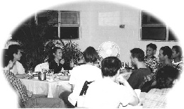
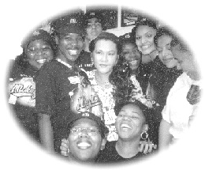

| Entre Maître et disciples |
|  |
Quand Maître trouve le temps de manger malgré son agenda chargé, Elle nous invite toujours à jouir des moments avec Elle. |
Ces derniers temps au centre de Floride, nous avons vécu des moments merveilleux avec Maître. Elle nous a éclairé sur nos défauts aussi bien que sur d'autres sujets intéressants que nous rencontrons dans notre vie quotidienne. Pendant que nous travaillions à améliorer la petite île au milieu du lac du centre pour en faire une terre de culture, Elle nous a aidé à comprendre que notre travail pourrait être accompli facilement et favorablement si nous considérons les facteurs de l'environnement dans notre projet. De cet événement, nous avons appris à chérir grandement toutes les ressources et la nourriture que Dieu nous fournit.
Selon les instructions de Maître, nous avons nettoyé quelques-unes des vieilles maisons du centre et travaillé à embellir l'environnement. Nous avons reconstruit même une ancienne étable près de la forêt de pins pour en faire un lieu idéal de récréation et où l'on pourra boit du thé. Parfois, Maître a partagé des blagues, des barbecues et a chanté des chansons avec nous.
Nous avons tous ri d'une liberté d'enfant comme si nous pouvions continuer toute la nuit, comme nous le faisions habituellement en regardant des films ! Et puis Maître a expliqué parfois la morale spirituelle dans les films, ce qui ajoutait plus de sens profond à un film somme tout ordinaire.
|  |
Celle-ci deviendrait-elle une photo historique du restaurant local MacDonald ? Espérons que MacDonald servira des hamburgers végétariens dans le futur ! |
Ensuite, Maître nous a expliqué que Sa nature est juste comme cela, ce qu'Elle voulait dire, c'est, toujours heureuse, humoristique, innocente, libre d'esprit et joyeuse. Maître nous a dit aussi qu'il n'est pas toujours nécessaire pour Elle de nous apprendre à travers les conférences. Le véritable enseignement peut aussi être transmis à travers Sa présence physique, et qu'une atmosphère détendue et joyeuse est suffisante pour Maître pour travailler de manière invisible, bénissant chacun de nous.
Pendant ce temps, un nombre d'événements incroyables sont arrivés. Comme les ouragans ont été annoncés sur la Floride les uns après les autres, les télévisions avaient prédit que les autoroutes seraient encombrés par des gens fuyant la région. Les stations d'essence seraient à court; et les magasins et supermarchés fermeraient tôt parce que leurs rayons seraient vides. Incroyablement, rien ne s'était passé ! Le temps est resté calme et paisible. Les fortes tempêtes ont changé de direction et disparaissaient dans l'océan. C'était vraiment étrange, car il n'y avait aucune obstruction topographique en Floride pour dévier de si puissants ouragans de leurs directions prévues. Nous devons remercier Dieu, chérir Sa grâce et rappeler chacun de nous de ne pas s'engager dans des opérations de culture aquatique ou autres industries qui engendreraient des massacres, étant donné que l'exploitation des ressources et de l'eau souterraine par l'industrie aquatique cause de nombreux sérieux problèmes, comme le glissement de terrain, où les maisons sont englouties, et des tremblements de terre causés par des mouvements de la croûte terrestre et des fissures. On pourrait conclure que le végétarisme est en effet bénéfique au monde !